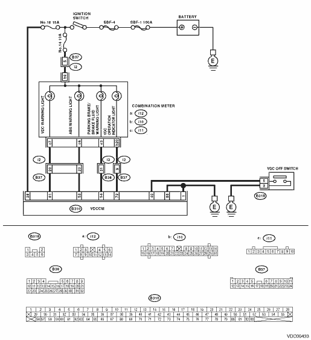
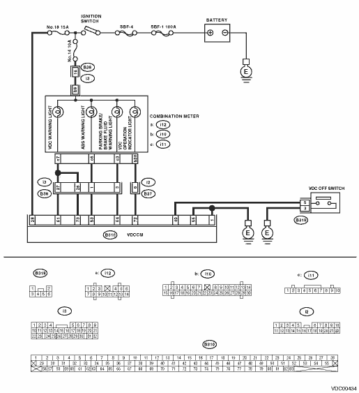

VEHICLE DYNAMICS CONTROL (VDC) (DIAGNOSTICS) > Diagnostic Procedure with Diagnostic Trouble Code (DTC)
DTC DETECTING CONDITION:
• ABS warning light circuit is open or shorted.
• VDC warning light/VDC OFF indicator light circuit is open or shorted.
• VDC operation indicator light circuit is open or shorted.
• Brake warning light (EBD warning light) circuit is open or shorted.
TROUBLE SYMPTOM:
When the ignition switch is ON (engine OFF), ABS warning light, VDC warning light/VDC OFF indicator light, VDC operation indicator light or brake warning light (EBD warning light) does not come on.
NOTE:
When the VDC OFF switch is held down for 10 seconds or more while the engine is running, the VDC warning light/VDC OFF indicator light will turn off and any following switch operations will be ignored. To recover VDC operation, turn the ignition switch from OFF to ON again.
WIRING DIAGRAM:
• LHD model


• RHD model

1.CHECK ILLUMINATION OF OTHER WARNING LIGHT.
Turn the ignition switch to ON (engine is OFF).
|
Do other warning lights illuminate?
|
|
Repair the combination meter. 
|
2.CHECK BULBS.
1) Turn the ignition switch to OFF.
2) Remove the combination meter.
3) Check the ABS warning light bulb, VDC warning light bulb, VDC operation indicator light bulb or the brake warning light bulb, and the VDC OFF indicator light bulb.
|
|
|
Replace the defective bulbs.
|
3.CHECK BATTERY SHORT OF LIGHT HARNESS.
1) Disconnect the VDCCM connector from the VDCCM.
2) Fit one sheet of paper (thickness 1.5 mm (0.059 in)) into the switch of the VDCCM connector.
3) Turn the ignition switch to ON.
4) Measure the voltage between VDC connector and chassis ground.
Connector & terminal
ABS warning light
(B310) No. 53 (+) — Chassis ground (−):
VDC warning light
LHD
(B310) No. 61 (+) — Chassis ground (−):
RHD
(B310) No. 61 (+) — Chassis ground (−):
(B310) No. 73 (+) — Chassis ground (−):
Brake warning light
(B310) No. 54 (+) — Chassis ground (−):
VDC indicator light
(B310) No. 72 (+) — Chassis ground (−):
|
Is the voltage less than 3 V?
|
|
Repair the light harness.
|
4.CHECK WIRING HARNESS.
1) Turn the ignition switch to OFF.
2) Install the ABS warning light bulb to the combination meter.
3) Install the combination meter.
4) Fit one sheet of paper (thickness 1.5 mm (0.059 in)) into the switch of the VDCCM connector.
5) Turn the ignition switch to ON.
6) Measure the voltage between VDCCM connector and chassis ground.
Connector & terminal
ABS warning light
(B310) No. 53 (+) — Chassis ground (−):
VDC warning light
LHD
(B310) No. 61 (+) — Chassis ground (−):
RHD
(B310) No. 61 (+) — Chassis ground (−):
(B310) No. 73 (+) — Chassis ground (−):
Brake warning light
(B310) No. 54 (+) — Chassis ground (−):
VDC indicator light
(B310) No. 72 (+) — Chassis ground (−):
|
Is the voltage 10 — 15 V?
|
|
Repair the wiring harness.
|
5.CHECK POOR CONTACT OF CONNECTOR.
Turn the ignition switch to OFF.
|
Is there poor contact in connectors between combination meter and the VDCCM?
|
|
|
6.CHECK WARNING LIGHT AND INDICATOR LIGHT.
1) Connect the connector to the VDCCM.
2) Turn the ignition switch to ON.
|
Do the ABS warning light, VDC warning light, brake warning light, VDC operation indicator light and VDC OFF indicator light illuminate?
|
Temporary poor contact occurs.
|
Replace the VDCCM.
|